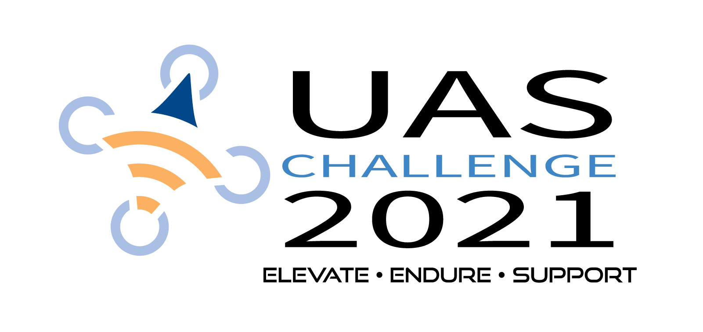

Project Description
 Challenge Summary
Challenge Summary: Unmanned aerial systems can help first responders accomplish their missions more effectively and efficiently. The goal of the 2021
First Responder UAS Endurance Challenge is to design a cost-efficient drone that can support a 10-lb wireless communication payload to assist first responders.
Critical aspects of the design include:- Sustained flight greater than 60 minutes
- All Up Weight under 100 pounds
- Vertical Takeoff and Landing (VTOL)
- Level 2 autonomy (heading and altitude controlled by drone)
- Under 20 minute setup time
- GPS system
- Flight Termination System
- System cost under $30,000
Stage 1: Concept Paper (April 1, 2020 - April 30, 2020)Open to all, 20 contestants advancePresent design approach to the challenge and specify which requirements and goals will be prioritized in the design. Provide estimates to key requirement capabilities of the proposed UAS. In addition, provide credentials for the competing team and its participating members.
Stage 2: Design, Prototyping, and Hardware Build (June 1, 2020 - Aug 7, 2020)Up to 20 contestants from Stage 1Build a prototype of the UAS with necessary components, systems, and hardware. In addition, competitors will participate in design reviews to check on and verify progress.
- PDR (Preliminary Design Review) - 20 advance, 15 awards
- CDR(Critical Design Review) - 20 advance, 15 awards
Stage 3: Video Test and Safety Evaluation (December 4, 2020 - March 1, 2021)
Up to 20 contestants from Stage 2 that meet performance requirements + Walk-onsVideo submission demonstrating UAS satisfies minimum requirements.
Stage 4: Live Test and Evaluation (March 29, 2021 - June 4, 2021)15 contestants from Stage 3Contestants complete static and live test flights to demonstrate capabilities of drone.(We are here!)
You can find the official competition rules, sponsors, and other competitors at the
First Responder UAS Endurance Challenge website.
Our Drone
Stage 1
The first stage in this NIST First Responder’s Challenge was the Concept Paper Contest in which our team was tasked with developing a proposal for an autonomous vehicle capable of over an hour flight time while carrying a 10 lb communication payload. The objectives of our paper and submission were to essentially outline our knowledge, skills, capabilities and approach for the challenge.
Given that the competition required long duration hover, our team wanted to leverage our existing technical knowledge and design work that was put into our quadcopter, Spinny, for the AUVSI SUAS challenge a few years prior. Spinny was a robust system that had shown durability, manufacturability, and efficiency that we felt would work well for this project. However, as Spinny was not capable of carrying a 10 lb payload or flying for over an hour, we had to redesign the propulsion system to meet the desired requirements.
This new drone was branded B.R.U.I.N (Bi-Energy Robust UAV for Impromptu Networking). During Stage 1, however, the “R” stood for Retractable as we were planning on implementing a spring loaded hinge at each of the boom arms that allowed the drone to be put in a more compact form factor for transportation. However, feasibility/manufacturability concerns prevented us from pursuing this idea past Stage 1.
The significant upgrades to our drone design came with our motor and energy consumption selections. Based on our experience with Spinny, we opted for the same motor/propeller combination (Hobbywing XRotor 100 KV brushless motor with a 30" propeller) as we found they had a great cost to performance ratio. Additionally, we had these components on hand for some testing and replacements. Regarding energy consumption, however, we knew that we needed a significant upgrade in available energy in the system. Given the high energy density of gasoline, we decided to look into available generators to put on the drone, in addition to supplemental batteries, which have the benefit of being recharged (especially while in flight).
While we knew we wanted a bi-energy system, we still had to determine the best combination of generator, batteries, motors/propellers and their configuration (i.e. quadcopter, hexacopter, X8, etc.). Given the large variability in combinations, we created two custom optimization scripts, in Matlab and Python, that simulated flight with the varying parameters to determine the optimal combination. The variables submitted to the scripts were various models of batteries, motors, and generators, as well as the NIST Payload weight, and weight of our existing quadcopter, Spinny. Ultimately, it was found that coaxially stacked motors in an X8 configuration with a 5 kW generator and twin 4L fuel tanks yielded the best flight time. A safety factor of 1.3 was also applied to the simulation for ensuring the team met the desired flight requirements.
In terms of Avionics, we opted for a Pixhawk 2 (running PX4) as it had been used previously on our drones, and it has proven to be a cost-effective and reliable solution for drone controls. It comes standard with redundant power supplies, inertial sensors and enough I/O ports to handle complex drone designs. Additionally, the platform provides an API for feeding telemetry to an external computer and manually triggering flight termination. Other avionics included a Raspberry Pi 4 companion computer, RFD900+ for long range communication, and RTK GNSS module for improved navigation and positioning capabilities. We also opted for a DJI Digital FPV system to provide high-definition 1080p real time video streaming and recording capabilities.
Overall, we leveraged our existing platforms to create the concept paper that was one potential solution for the First Responder’s Challenge. In addition to illustrating the work we have accomplished individually and as a team, we received support from faculty such as Professor Fisher and Professor Wirz, who vouched for our team’s capabilities, especially in a Pandemic/virtual landscape. Through our proposed solution, our team was ultimately selected to advance to the second stage (1 of 20 teams).
Stage 2
The Preliminary and Critical Design Reviews were important milestones used to judge our progress. We were succesful in proceeding past these two stages, but not without some great constructive feedback along the way.
Thrust and power usage were of particular importance. By revising our calculations between the PDR and CDR, we were able to obtain a more accurate power usage at hover: 1700W down from 3500W. Following the CDR, we were then able to select a smaller generator than previously planned (The
Foxtech NOVA-2400). By the time of the CDR, we were able to cut a lot of weight in other areas, including the motor mounts. The sum of these revisions lead to an increased flight time estimate: 90 minutes up from 75 minutes. The 90 minutes estimate is also very conservative.
Another important update at the CDR was the power system wiring diagram (slide 4 of the CDR). This is obviously important when it comes to actually wiring the system. Presenting it at the CDR allowed us to get much-needed feedback, which was that we shouldn't attach components to just a one of two batteries, which are in series, since this would cause a charge imbalance.
The complete PDR and CDR presentatations are embedded below.
Preliminary Design Review (PDR)
Critical Design Review (CDR)
Stage 3
More info to come soon!
 Join
Calendar
Officers
Gallery
Tools
Join
Calendar
Officers
Gallery
Tools